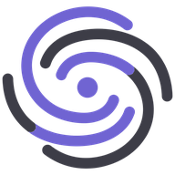

AsePsicoPara una semana
Lo que pasa entre sesiones también es parte del trabajo.
Cada día, escribe cuántas horas dedicas a cada tarea. Puedes usar decimales (0,5 es media hora).
Deja en blanco lo que no hagas.
Al final de la semana, suma cada fila y pasa los totales a la página 2.
| Tarea | Lun | Mar | Mié | Jue | Vie | Sáb | Dom | Total |
|---|---|---|---|---|---|---|---|---|
| Agenda, citas y recordatorios | h | h | h | h | h | h | h | h |
| Preparar sesiones, notas e informes | h | h | h | h | h | h | h | h |
| Material y seguimiento entre sesiones | h | h | h | h | h | h | h | h |
| Papeleo, facturas y gestoría | h | h | h | h | h | h | h | h |
| Total del día | h | h | h | h | h | h | h | h |
Es una cuenta con las horas que tú escribes, no una medición. Que una tarea esté en la lista no significa que AsePsico la haga por ti.
h a la semana
h a la semana
h a la semana
h a la semana
h
Haz la cuenta en asepsico.es
Es una cuenta con las horas que tú escribes, no una medición. Que una tarea esté en la lista no significa que AsePsico la haga por ti.
Estamos construyendo AsePsico, un software para psicólogos y consultas de psicología, pensado para el seguimiento entre sesiones. Todavía no está abierto al público. Piloto gratuito para psicólogos: apúntate a la lista de espera.
César Román Calvo, graduado en Psicología y fundador de AsePsico.